Handling
Threads
Threads
See sutures for characteristics.
Avoid using excessive force
- if it breaks thats one thing
- if it weakens, thats worse.
Do not weaken by dragging over sharp edges.
- do not grasp with metal instruments.
Avoid them catching on handles of instruments.
Knots
Security depends on friction between threads.
- area of contact
- material
- tightness
- length of thread projecting
Half-hitch
The half-hitch is the basis of most surgical knots.
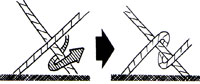
- must cross ends opposite from where started.
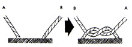
Granny vs Reef
Both are two half hitches repeated on top of each other.
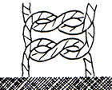
- in a reef, they go in opposite directions.
- looking down, ends will appear parallel in reef, right-angled in
Granny.
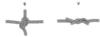
Slip knot
Keep one end taught while tying a reef or granny.
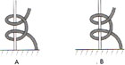
Triple-throw
knot
Tied over a reef to secure for reliability.
Standard surgical knot.
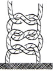
Cross hands at each throw.
- do not cross your hands in the horizontal plane (parallel to you),
but in the perpindicular direction to you.
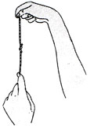
Two-handed
knot
The safest knot: both hands manage tension evenly.
- the beginner is less likely to distort the knot or pull at its
attachment.
1. If short end of thread is toward you:
- Hold short end between thumb and index of pronated left hand.
- Grip long end with fully flexed right ring and little fingers (spare
hangs off curled end of little finger).
- Draw a loop of the long end with the left ring finger behind short thread.
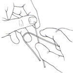
Move the right thumb in as shown.
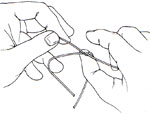
Trap the short end after the crossing with the right index, and
supinate, carrying it towards you.
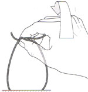
Recapture short end with left index and thumb, tighten hitch.
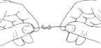
2. Now short end of thread is away from you.
- Pick it up between thumb and index finger of pronated left hand.
- Now draw a loop of the long end in
front of short thread
- Use right hand ring finger & thumb now to pass &
recapture as before but in opposite direction.
3. Repeat
One
Handed Knot With Left Hand
"I deprecate the use of this knot by trainees. It is not a bad
knot but it is a badly executed knot. It looks elegantand showy -
but rapidly thrown half-hitches badly laid are dangerous. Prefer
slower, secure, two-handed knots unless you are confident that every
hitch is not only formed but tightened perfectly every time."
- "it is the psychological immobilisation of the instrument-holding
hand, prejudicing the correct laying and tightening of the knot, that
endangers its security". (Kirk)
Instrument
Tie
Use the two-handed method when tying important knots.
Use instrument ties when doing repetative suturing.
Laying
and Tightening
Arranging threads correctly is as important as forming knots correctly.
"A carefuly tightened knot weakens the thread significantly. A roughly
tightened knot weakens it critically".
1. When tightening a hitch, ensure loops are of equal size.
- if one loop is larger, the shorter tends to become tautly striaght
before the slack is taken up in the other.
- this occurs especially when one end of a knot is short, so you keep
it taught to avoid losing it.
- should pull the longer end through to match, then tighten.
- else you will create a slipping hitch (left) rather than a true hitch
(right).
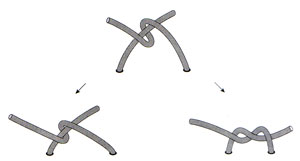
2. The force and direction of pull for both threads must be equal and
lie along a straight line.
3. Do not overtighten the first hitch: oedema is inevitble, and if
constricted the tie may cut.
- tighten the second hitch on the first, though; the binding effect of
the hitches tightened secures the knot.
4. When tying an important knot on to strong tissue, bed it down by
gently and evenly tugging the ends apart two or three times (ie give it
a bit of a jiggle).
- do the same with the second hitch.
Tightening
Under Tension
Not ideal, but we don't always have the choice.
1. Use the assistants hands to bring the structures together first, to
hold them there while tying the knots.
2. For increased contact, so increased friction, do a true "surgeons
knot".
- ie with a double throw at the base:
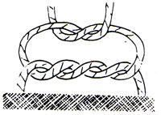
When tying with smooth synthetics, variations recommended to hold the
ends in place are as follows:
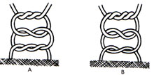
3. Can try keeping threads more taught when tying second hitch:
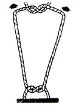
4. When suturing skin, if edges are separating after being bought
together with first half-hitch, try rotating threads clockwise /
anticlockwise then locking them:
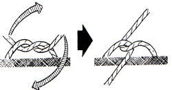
- they unlock with a second hitch correctly tied laid over the top.
5. Alternatively tie a slip knot.
- keep one thread taught, and throw two half-hitches around it (same or
alt. directions).
- can tighten this and it will hold in place
- now add two correctly tied hitches over top to create a proper reef
knot.
6. Few things are more effective than an assistant's finger pushing on
the first hitch.
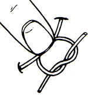
7. Another valuable method is to apply some temporary stitches, pulled
across the wond by the assistant while the definitive stitches are
placed.
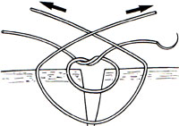
Tying
Knots in Cavities
Most convenient to form the hitches outside the cavity.
- tie two-handed without any tension on the thread ends.
- with an extended finger, push the loop onto the structure
- tighten by pushing down with the finger on one thread, with exactly
the same force as is pulling on the thread from outside the cavity.
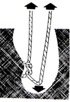
Ligatures
1. Select the finest material that will reliably hold.
- silk is ideal because it is soft and flexible, and can be securely
tied.
- have a limited tendency to be resorbed though, unlike polysorb etc.
- avoid near skin: the FB reaction may generate subcutaneous nodules or
even sinuses to the skin surfaces.
2. Position and tighten with care.
- too tight and it will cut through fragile tissue.
- too slack and it wil not occlude a thick walled structure or slip.
3. Tie around haemostatic forceps or hold taught and have assistant
reach over to pick up forceps beyond thread:
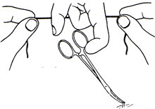
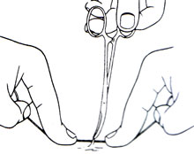
4. Tie the ligature carefully,
slowly and securely.
5. Then have assistant cut to a safe length, which is:
- cut braided materials 2-3mm long
- cut long monofilaments 4-5mm.